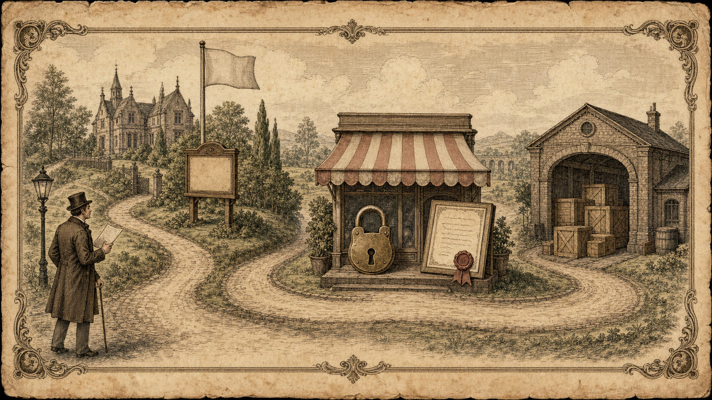
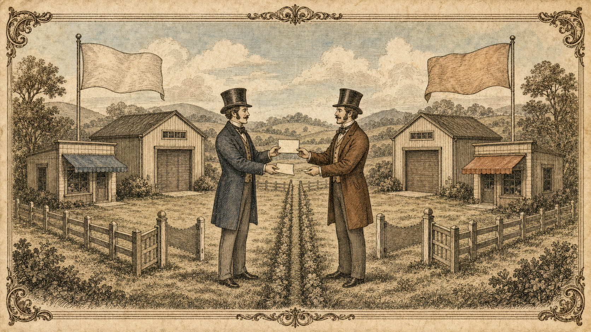

隣人に貸した一区画
— 他人の資源に我が名を与える、クロスアカウント委任の全記録 —
依頼は同期の学徒から舞い込んだ。「君のドメインのサブドメイン friend.example.com で、私のサイトを公開させてほしい」。サイトの中身——S3もCloudFrontも——は先方のAWSアカウントにあり、私の手元にあるのはドメインの台帳だけ。前件までと決定的に違うのは、資源と名前の持ち主が別人であるという一点だ。結論を先に記す。私のやることは台帳に二行書くだけ。だがその二行に至るまでに、S3とは何か、DNSとは何か、証明書とは何かを、すべて一本の糸でつなぎ直すことになった。本稿はその全記録である。
I.事件の構図 — 誰が何を持っているか
私 : example.com のドメイン(Route 53のホストゾーン = 台帳)
同期: サイトの資源(S3 = 倉庫、CloudFront = 店)…先方のアカウント内
目標: https://friend.example.com で同期のサイトが 🔒 付きで開く図1 — 左が私(台帳の主)、右が同期(倉庫と店の主)。私の土地の道しるべが、隣人の店を指す
これは「名前の世界(私の領地)」と「モノの世界(同期の資源)」を、持ち主同士の合意でつなぐ作業である。役割分担の原則は一行で足りる:
II.同期は「S3を作った」。……で、なぜそれだけでは駄目なのか
同期はS3にHTMLと画像を上げた。だがS3はあくまでファイル置き場——倉庫である。倉庫のままでは今回の目標に三つ届かない。
図2 — S3は倉庫、CloudFrontは店頭。客は倉庫に入るのではなく、店で品(ページ)を受け取る
| 要件 | S3単体 | CloudFrontを前に置くと |
|---|---|---|
| HTTPS(独自ドメインの🔒) | ❌ httpしか話せない | ✅ ACM証明書を「着られる」 |
| 独自ドメイン名での受付 | △ バケット名の縛り | ✅ 代替ドメイン名で自由 |
| 世界への高速配信 | ❌ | ✅ CDNとしてエッジから即応 |
証明書という身分証を着られるのはCloudFrontだけ。ゆえに同期はまずS3をオリジン(店に品を卸す倉庫)としてCloudFrontを建てる。できあがると d1234abcd.cloudfront.net なる仮の住所が与えられ、この時点で「怪しげな英数字の住所でなら、世界中から見える」状態になる。以後の全工程は、この住所にちゃんとした名前を与えるための作業である。
III.DNSという台帳 — なぜ私の協力なしには成立しないのか
ブラウザに friend.example.com と打った者は、まずDNS——インターネットの台帳網に「それはどこか」と尋ねる。台帳に「それは d1234abcd.cloudfront.net のことだ」と書いてあれば、旅人は店にたどり着ける。
図3 — 旅人(ブラウザ)は名前を告げ、台帳(DNS)で住所を知り、店(CloudFront)へ向かう
そして example.com 配下の問い合わせは、すべて私のホストゾーンに届く。ここに書き込めるのは地球上で私だけ。同期がどれほど立派な店を構えても、私が台帳に一行書かぬ限り、誰一人たどり着けない。これが「サブドメインの委任」の意味——私の土地の一角を、隣人に貸すということだ。
図4 — 我が領地の一角に隣人の看板を立て、彼の店へ案内する
IV.全行程の見取り図

図5 — 全体像。旅人 → 私の台帳 → 同期の店(🔒と証明書)→ 同期の倉庫。看板だけ私のもの、店と倉庫は隣人のもの
同期: ① S3をオリジンにCloudFrontを建てる(店の開業)
同期: ② ACM(us-east-1!)で friend.example.com の証明書を申請
└ 「検証用CNAME」の名と値が発行され、私に届く
私 : ③ 台帳に検証用CNAMEを一行(地主の封蝋)→ 証明書が発行される
同期: ④ CloudFrontに代替ドメイン名+証明書を装着(看板と身分証)
└ 店の住所 dxxxx.cloudfront.net が私に届く
私 : ⑤ 台帳に本命のAliasを一行(正式掲載)→ この瞬間に公開
検分: https://friend.example.com 🔒順番は動かせない。CloudFrontには「有効な証明書なくして看板を掲げるべからず」という掟があるため、封蝋(③)が看板(④)より必ず先。台帳への正式掲載(⑤)は店の支度が全て済んでから——載せた瞬間から客が来るのだから。
V.証明書とは何を証明する紙か
ここで一度立ち止まる。そもそも証明書とは何か。ブラウザが接続する相手は、実のところただのIPアドレスの先の「誰か」にすぎない。経路を細工して偽の店に誘い込む手口は現実に存在する。そこで店は、信頼された発行機関(今回はACM)が署名した証明書を提示する。その紙が保証するのは二つ:
- 本人性 — 「この店は
friend.example.comを名乗る資格がある。その名のDNSを管理する者が承諾済みだ」 - 暗号化 — 同封の公開鍵(南京錠)で、盗み聞きされぬ通信路(HTTPS)を確立する
逆に保証しないものも記しておく。品物の善し悪し、店主の人格。🔒=安全なサイト、ではない。「本物の名で、漏れずに話せている」——それだけである。
ACMの審査法 — 地主の封蝋
では「DNSの管理者が承諾済み」を、ACMはどう確かめるのか。誰でも「私が friend.example.com です」と申請できてしまっては偽の身分証が作り放題だ。ACMの手口はこうである。申請を受けると、問題と正解のペアを発行する:
質問する名前: _187d13781f71e5…….friend.example.com ← ランダムな試験用の名前
期待する答え: _01c31c5a64006……acm-validations.aws ← ランダムな正解そして宣告する。「この質問にこの答えが返るよう、DNSに登録できたら合格」。台帳に書けるのは地主だけ——ゆえに書けた事実そのものが「地主の承諾」の証明になる。私は同期から届いたこの二値を、自分の台帳にCNAMEとして一行書く。ACMの検分係(自動プログラム)は数分おきに公開DNSへ質問を投げ続け、答えが一致した瞬間、証明書を発行する。
図6 — 私が台帳に一行書く(封蝋)→ 検分係が虫眼鏡で検める → 同期に証明書が渡る
.example.com を自動で付ける。フル名を貼ると …example.com.example.com なる怪文書と化し、検証は永遠に通らぬ。手前の部分だけ入れること。
(二)ランダム文字列を省いてはならない。あれは案内用の名にあらず試験の答案用紙の番号——意味不明であること自体が仕様である(推測を防ぎ、本命の名前とも衝突させない)。
(三)発行後も消すな。証明書は約十三ヶ月で切れるが、答案が残っていれば検分係が再訪して自動更新してくれる。
friend.example.com、場所はus-east-1(CloudFrontはそこの証明書しか見えない——東京で申請する過ちは、全国のハマりどころ第一位である)。なお申請時点でその名前がまだ世に存在せずとも構わない。検分係が見るのは答案の一行だけ——更地のまま営業許可だけ先に取るのが、むしろ正しい順序である。
VI.発行と装着は別の話 — 店側の受け入れ支度
証明書が発行されても、それはまだACMという役所の引き出しの中にある。ブラウザが検分するのは役所ではなく店頭だ。同期は自分のCloudFrontで二つの設定をする:
| 設定 | 意味 | 怠るとどうなるか |
|---|---|---|
代替ドメイン名に friend.example.com | 共用ビルへのテナント届け。「この名の客は私宛」の宣言 | 403 — 受付が「その名の契約者はいない」と門前払い |
| カスタムSSL証明書を選択 | 引き出しの身分証を店頭に装着する | SSLエラー — TLS握手の玄関先で決裂 |
CloudFrontの実体は何百万のサイトが同居する共用ビルである。ブラウザは接続の劈頭、必ず「私は friend.example.com に用があって参った」と名乗る。受付はこの名乗りをテナント名簿と照合し、その名の身分証を提示する。名簿と身分証、どちらが欠けても客は玄関で追い返される。DNSがいくら正しく案内しても、店側が受け入れ支度をしていなければ徒労に終わる——案内(私)と受け入れ(同期)、両方揃って初めて扉は開く。
VII.第二の書き込み — 本命のAlias(正式掲載)
同期から店の住所 d1234abcd.cloudfront.net が届いたら、最後の一行を書く:
Record name : friend
Type : A
Alias : オン → 「Alias to CloudFront distribution」
→ 欄に dxxxx.cloudfront.net を直接貼るA・CNAME・Alias — 三者の見分け
旅人の問い「friend.example.com の番地(IP)は?」への答え方が三通りある。旅人が最後に必要とするのは常にIPアドレスただ一つであり、台帳の調べ物は「IPが手に入るまで続く」ことを思い出されたい。
| 方式 | 台帳の答え | 評 |
|---|---|---|
| A(素) | 「番地は 13.224.10.5 だ」 | 直書き。相手(CloudFront)の番地は頻繁に変わるゆえ、今回は不可 |
| CNAME | 「d1234….cloudfront.net という名前で調べ直せ」 | 名前から名前への橋。IPの管理は先方(AWS)に任せられるが、旅人に二度手間 |
| Alias(A) | (裏で番地を調べ)「13.224.10.5 だ」 | 名前で控え、IPで即答。CNAMEの発想とAの応対の良いとこ取り。AWS専用・問い合わせ課金なし |
CNAMEが結ぶのは名前と名前である(IPでもURLでもない)。「私の管理下の名前 → 他人の管理下の名前」という橋——検証用CNAMEも本命も、本質はこの橋の一種だ。この一行を保存した瞬間、friend.example.com という名前が世界に誕生し、公開される。
VIII.アクセス時の一部始終
図7 — 訪問者は私の台帳で道を知り、同期の店で身分証を検め、倉庫の品を受け取る。道中はすべて施錠(HTTPS)
1. ブラウザ「friend.example.com はどこか」
2. 私の台帳(Alias)が番地を即答 → 旅人、店に到着
3. TLS握手: ブラウザ「friend.example.com 殿か。身分証を」
→ 店が装着済みの証明書を提示。その信頼の根っこは
私が押した封蝋(検証CNAME)にある → 🔒
4. 店は名乗りをテナント名簿と照合 → 倉庫(S3)から品を出して手渡す 🎉検分の道具も記しておく。dig friend.example.com でAWSの番地が返れば台帳は働いている。curl -I https://friend.example.com で200が返れば開店である。
IX.これはお互い様の課題である

図8 — 私と同期は完全に対称。逆に私のサイトを同期のドメインで公開するときは、役割がそっくり入れ替わる
同期も自分のドメインを持っている。今度は私のサイトを同期のサブドメイン me.friend-domain.com で公開するなら、上の全工程の役割を入れ替えるだけだ:
| 作業 | 同期のサイトを私の名で (本稿の向き) | 私のサイトを同期の名で (逆向き) |
|---|---|---|
| S3+CloudFrontを用意 | 同期 | 私 |
| ACMで証明書を申請(us-east-1) | 同期 | 私 |
| 検証用CNAMEを台帳に記帳 | 私 | 同期 |
| CloudFrontに看板+身分証を装着 | 同期 | 私 |
| 本命のAliasを記帳 | 私 | 同期 |
迷ったら大原則(I.)に立ち返ればよい。資源のことは資源の持ち主、台帳のことは台帳の持ち主。
X.発展 — 区画の鍵ごと渡す(方法b・NS委任)
本稿の方式(方法a)では、同期に頼まれる度に私が台帳へ書く。私が旅に出れば同期の作業は止まる。もう一つの道がある——「friend.example.com から先の頁は、まるごと隣人の台帳を見よ」と一行だけ書き、以後の管理を任せる。これがNSレコードによる委任だ。
図9 — 方法aは「頼まれる度に地主が書く」、方法bは「区画の鍵ごと渡し、中の看板は友人が自由に立てる」
同期: friend.example.com のホストゾーンを自分のアカウントに新設
→ ネームサーバー4台の名が発行される → 私に届く
私 : 台帳にNSレコード一行(その4台の名を列記)…これで終い
同期: 以後、検証CNAMEもAliasも孫サブドメインも、全て自己完結NS = Name Server、「この名の担当はこの台帳である」という案内板だ。実は example.com 自体も、世界の大元の台帳からNSで委任されて動いている。方法bは同じ仕組みをもう一段深く自らやるだけ——DNSという建物の骨組みを己の手で触る好機ゆえ、「発展」課題とされている。
| 方法a(都度記帳) | 方法b(NS委任) | |
|---|---|---|
| 私の手間 | 頼まれる度に一行 | 最初のNS一行のみ |
| 同期の自由度 | 常に私を待つ | 完全に自己完結 |
| 費用 | 零 | ゾーン代 月$0.50。払うのは委任される側(同期)——「専用の台帳を持つ者が、その台帳代を払う」 |
| 危険 | 少ない | NS4行の写し間違いは「時々つながらぬ」という最悪の壊れ方をする。管理権も丸ごと移る——信頼できる相手に限る |
XI.よくある未解決事項
| 症状 | 原因と対処 |
|---|---|
| SSL/暗号系のエラー | 証明書の未装着、またはデプロイ中(Deploying)。装着(VI.)を確認し完了を待つ |
| 403とCloudFrontのエラーページ | 代替ドメイン名の未登録・綴り違い |
| NXDOMAIN(名前が存在しない) | 本命のAlias(VII.)が未記帳、または名前の打ち違い |
| 証明書が永遠に「検証保留中」 | 検証CNAMEの写し間違い、または二重サフィックス(V.の注意一) |
| 証明書が選択肢に出ない | us-east-1以外で申請している(毎度の罠) |
| cloudfront.netでは見えるのに名前で見えない | 本命Aliasの反映待ち。digで検分し五〜三十分待つ |